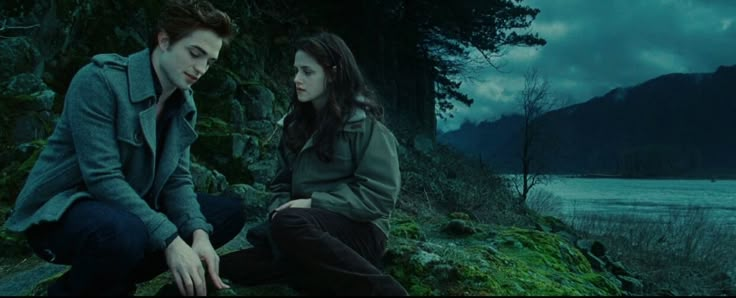

☆♡ Overview ♡☆
The Twilight saga, written by Stephenie Meyer, became one of the most influential and commercially successful book series of the 21st century. First published in 2005, the series follows the love story between Bella Swan, a human girl, and Edward Cullen, a vampire, as they navigate romance, danger, and supernatural conflicts. The books quickly gained a devoted following, selling over 160 million copies worldwide and being translated into dozens of languages. With its unique blend of romance, fantasy, and suspense, Twilight captivated readers of all ages, particularly young adults, who became deeply invested in its characters and themes.
The success of the books led to a major film franchise, beginning with Twilight in 2008 and concluding with Breaking Dawn – Part 2 in 2012. The films were a box office sensation, collectively grossing over $3.3 billion worldwide and catapulting stars like Kristen Stewart, Robert Pattinson, and Taylor Lautner to international fame. The series’ popularity extended beyond books and films, influencing fashion, music, and internet culture. Fan communities flourished on platforms like Tumblr, Twitter, and fanfiction sites, where debates over “Team Edward” versus “Team Jacob” became a defining aspect of the saga’s fandom.
Despite some criticism over its writing style and portrayal of relationships, Twilight left an undeniable mark on pop culture. It revitalized the young adult genre, inspiring a wave of supernatural romance novels and leading to the rise of other successful franchises like The Hunger Games and Divergent. More than a decade after its peak, Twilight continues to be a nostalgic favorite for many fans, proving its lasting influence in literature and entertainment.
☆♡ Influence on the Young Adult (YA) Genre ♡☆
The Twilight saga had a profound influence on the young adult (YA) drama genre, reshaping the themes, storytelling, and marketability of YA literature and film. Before Twilight, YA drama was often centered on coming-of-age stories, high school experiences, or fantasy with traditional hero’s journeys. However, Twilight introduced a new wave of supernatural romance, where love triangles, emotional intensity, and forbidden love took center stage. This shift led to a boom in YA novels featuring similar themes, such as The Mortal Instruments by Cassandra Clare and Hush, Hush by Becca Fitzpatrick. The success of Twilight proved that teenage audiences craved stories blending romance, fantasy, and personal struggle, leading publishers to prioritize books with similar narratives.
Beyond literature, Twilight also transformed YA dramas in the film and television industry. The saga’s blockbuster success showed Hollywood that YA adaptations could be highly profitable, leading to the production of films like The Hunger Games and Divergent, which followed similar formulas of love, conflict, and high-stakes drama. It also influenced TV series such as The Vampire Diaries and Teen Wolf, which featured supernatural romance and love triangles reminiscent of Bella, Edward, and Jacob’s dynamic. The emotional depth and brooding aesthetics of Twilight became a blueprint for YA dramas, with many adopting its darker, more intense tone.
Additionally, Twilight helped redefine audience engagement in YA media. The passionate fanbase, fueled by online forums and social media, set the stage for modern fandom culture, where young readers and viewers actively participated in discussions, theories, and even fanfiction. The intense debate over "Team Edward" versus "Team Jacob" exemplified how YA dramas could inspire deep emotional investment from fans, a trend that continues with franchises like Shadow and Bone and A Court of Thorns and Roses. In many ways, Twilight not only influenced the storytelling of YA dramas but also shaped how young audiences interact with and consume media today.
☆♡ Impact on Fashion and Music ♡☆
The Twilight saga had a notable influence on both fashion and music, shaping trends that resonated with fans throughout the late 2000s and early 2010s. The series' dark, moody aesthetic, heavily influenced by its vampire theme, inspired a shift in fashion, particularly among young adults. The characters, especially the Cullen family, embodied a sophisticated yet subtly gothic style, featuring muted tones, sleek silhouettes, and an effortlessly mysterious allure. Bella Swan’s casual, Pacific Northwest-inspired wardrobe—consisting of flannel shirts, hoodies, and denim—became popular among fans who sought to emulate her relatable, laid-back look. Meanwhile, characters like Alice Cullen and Rosalie Hale inspired a more elegant, polished take on vampire fashion, leading to an increase in interest in vintage-inspired and ethereal styles.
Beyond clothing, Twilight had a significant impact on alternative and indie music, bringing lesser-known artists into the mainstream through its iconic soundtracks. The films prominently featured bands like Muse, Paramore, Florence + The Machine, and Bon Iver, whose atmospheric and emotional sound perfectly complemented the saga’s romantic and supernatural themes. Many of these artists saw a surge in popularity following their inclusion in the films, with songs such as Paramore’s Decode and Christina Perri’s A Thousand Years becoming anthems for Twilight fans. The franchise also helped shape the musical identity of YA films moving forward, influencing the use of melancholic, indie-style soundtracks in later adaptations like The Hunger Games and Divergent.
☆♡ Impact on the Film Industry ♡☆
The Twilight saga had a profound impact on the film industry, proving that young adult (YA) book-to-film adaptations could be both critically and commercially successful. Before Twilight, Hollywood was hesitant to invest heavily in YA fantasy-romance films, but the saga’s overwhelming box office success—grossing over $3.3 billion worldwide—changed that perception. Studios quickly recognized the financial potential of adapting YA novels, leading to a wave of similar book-to-film franchises such as The Hunger Games, Divergent, and The Maze Runner. The Twilight films demonstrated that there was a massive audience eager for emotionally driven, character-focused stories, particularly those with strong romantic elements.
Beyond its influence on marketing, Twilight also shifted Hollywood’s approach to casting and storytelling in YA adaptations. The franchise catapulted relatively unknown actors like Kristen Stewart, Robert Pattinson, and Taylor Lautner into global stardom, showcasing the power of YA films to launch careers. Its blend of supernatural romance, intense drama, and brooding aesthetics also shaped the tone of later adaptations, encouraging a darker, moodier atmosphere in YA films. Even years after the series ended, Twilight’s impact on the film industry remains evident in the continued popularity of YA adaptations and the way studios cater to dedicated fan communities.
☆♡ Social Media Influence ♡☆
The Twilight saga played a crucial role in shaping modern fan culture on social media, setting the stage for how franchises interact with their audiences today. During its peak in the late 2000s and early 2010s, Twilight fans took to platforms like Tumblr, Twitter, and Facebook to engage in discussions, create fan theories, and express their love for the series. Online debates, particularly the infamous “Team Edward vs. Team Jacob” rivalry, dominated social media and helped drive interest in the films. Fans also used sites like Fanfiction.net and Wattpad to expand the Twilight universe through fanfiction, a practice that became a major aspect of online fandoms and even led to the creation of Fifty Shades of Grey, which began as Twilight fanfiction before evolving into its own best-selling series.
Beyond fan engagement, Twilight was also one of the first major franchises to experience the impact of internet meme culture. While many fans adored the series, it also became the subject of widespread parody, with viral memes poking fun at its dialogue, characters, and dramatic moments. Scenes like Edward’s intense stare at Bella and Jacob’s dramatic shirtless transformations became widely shared images, often accompanied by humorous captions. This blend of admiration and satire made Twilight an early example of how franchises could be both beloved and ridiculed online, a phenomenon that continues today with series like Harry Potter, The Hunger Games, and Euphoria.
Even in the modern social media landscape, Twilight continues to have a presence. TikTok and Instagram have seen a resurgence of Twilight-related content, with younger audiences discovering and reinterpreting the series through humorous edits, aesthetic tributes, and nostalgic discussions. Memes from the franchise, such as “Bella, where the hell have you been, loca?” and exaggerated reenactments of Edward and Bella’s interactions, remain popular among internet users. This lasting digital presence highlights how Twilight not only influenced social media engagement during its initial run but continues to shape how fandoms interact, evolve, and keep beloved franchises alive in online spaces.